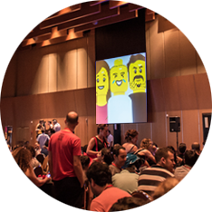

Hello Design for Experience Awards Judges
Ready to find out why NetcraftAcademy is a great place to learn the ins-and-outs of user experience design?
Netcraft Academy is the leading user experience design training school in Israel. The academy was founded in 2010. It was founded based on a desire to share the wealth of knowledge and experience that we collected in the field on a daily basis.
The academy offers a wide variety of courses in which students are given the opportunity to experience and learn from leading user experience professionals. Students study methodologies and work processes, hear about real experiences in dealing with Israeli clients as well as global clients, and gain hands-on training in how to use the most advanced tools available today.
NetcraftAcademy’s staff is comprised of professionals who are currently working in the field of UX design, so that we can be sure that students are getting an up-to-the-minute, state of the industry education.
With vast experience in user research, user interface, design, and development, we can guide students from the most basic aspects of user experience design to the finest details.
Outside the classroom, we support our students as well by offering hands-on consulting with Netcraft’s staff to be sure we can answer every question a student might raise.
Our Vision
"We Love Sharing Our Knowledge"
From the outset, Netcraft’s founders believed in sharing knowledge and expertise with the UX community at large. NetcraftAcademy is strongly driven by this value, providing real-world, practical information to students from our current and past projects. In our courses, we illustrate our work methodology at netcraft and reveal insights from successful processes, as well as the mistakes from which we have learned.
Our motto is to constantly share what we learn. Our public UX blog has been around since 2006, and is the largest of its kind in Israel. From teaching new topics in our academy and updating our outstanding blog articles with interesting and relevant information to organizing conferences and events for the community, Netcraft exceeds the high standards that it has set.
The Value We Bring to Our Students
NetcraftAcademy enables students to learn from professionals that practice their UX skills every day.
Since we have experience in research , prototyping, design, and development we provide our students a better understanding of the "big picture". Our professional experience is vast and diverse and we can help each student to grow in the direction they chose. Our courses are growing and improving with each cycle, and we add up-to-date lessons according to market developments.
The learning experience is very important to us and we do whatever we can to promote a positive atmosphere in our classrooms. We support our students outside of class hours and they can ask and consult with our educators and our staff concerning in any topic they choose.
We continue to support the students after the course is over in our alumni groups on social media. We also help them to find jobs, support them through the interview process, and provite expert guidance at alumni events.
“We offer a chance to learn from our experience, both from our mistakes and our countless successes!”
Our Students
When NetcraftAcademy was first founded, we envisioned our target audience to be UI designers. We soon recognized an interest from other audiences, such as graphic designers, freelance professionals, project managers, marketing directors, content writers, entrepreneurs, develop team managers, and C-Level managers.
Since our students come from diverse industries and professions we keep a high professional standard in every lesson.
In addition, we have a strict admission requirements like college degrees and appropriate professional experience in order to prevent different levels of understanding in the classroom and unqualified candidates.
We love infographics!
| We have 712 graduates | And 19 courses | Teached by 12 lecturers | For 2.2 years |
“Netcraft Academy's User Experience and Usability Training course is a gem! [It is] full of insights and essential information, accessible, fun and helps you to get into the field as smoothly as possible. Definitely recommended!”
Eyal Rofe, UX Designer and a lecturer in the field of Android apps and innovation“This course has given me the opportunity to enter and integrate into the realm of UX. As part of NetcraftAcademy's recruitment program I was offered and accepted to join the UX team at Bezeq, the largest telecommunications group in Israel.”
Adi Katzav, UX designer at Bezeq“I wanted to study from the people who truly understand the world of UX, know how to present and pass along their knowledge, and are committed to the students. That's why I chose Netcraft Academy.”
Sandra Bar-Tov, UX/UI designer at glassesusa“The course has given me a tool box as a graphic designer that's comes from designing for print. Now, I have the courage to make the transition I was so terrified of starting out as a designer in the digital world.”
Taly Schwartz, Graphic DesignerPrivate Courses for Companies
Many companies in Israel have UX teams and they come to us to help them to improve their in-house teams. NetcraftAcademy is not only a place to strengthen their skills, but also a place to teach them to be better professionals. We also provide companies with new tools, teach them work methodologies that fit their organization, and guide the company’s other employees to create a better UX team.
We offer tailor-made courses specially for companies in order to meet the exact needs of each company, whether it's building an internal team or giving lectures to inspired the entire company. In addition, last year we expanded and began to give workshops tailored-made for companies in America and Europe.
Our Courses
UX Strategy for Startups and Entrepreneurs
Our course offers a fast and focused course for entrepreneurs. The course combines information and examples from the field of user experience and practical tools. We help them develop prototyping skills that helps them to work fast and present their ideas to investors. In addition, we provide an in-depth understanding of user experience and how it contributes to the product success.
Usability and User Experience
Usability and User Experience was the first course we created, and it remains the most popular course at NetcraftAcademy. There was a demand for a structured UX course, but the options for those interested were nearly non-existent. NetcraftAcademy’s UX course met this demand by offering a professional course that provides a clear overview of UX principles and methodologies, examines case studies and best practices, and builds practical skills through real-world assignments and exercises.
Mentors Program for Building a Portfolio
This course offers personal guidance from Israel's leading UX professionals in building a design and prototype portfolio. We help both new and experienced designers and UXers to choose their best work to present and if they don't have any, we help them produce and build a portfolio from scratch. Each student is assigned to a personal experienced mentor that will guide them through the process of creating a portfolio. Our mentors are a part of Netcraft's team and include our CEO and Art Director.
Code for Designers and UX Professionals
Although designers may not be required to write code they are required to know the basics so that their work process will be professional and lead to better results. In our course, we teach designers and UX professionals the basics of coding so as to help them to better integrate with developers in order to save time and money. It will also help them produce easy-to-build designs, use the full capabilities of available technologies, and understand a product beyond photoshop to create better overall designs.
From Print to Digital
This course helps print designers to gain the necessary skills to become digital designers as well. We introduce print designers to the different platforms and their rules; the connection between usability, aesthetics and business objectives; identifying and matching user expectations; and the habits of users, rapid detection of relevant content (findability), an understanding of the technological processes of production and work with developers, adapting the interface to the limitations of technology and more.
HTML5 for Developers
When HTML5 was released we decided to help experienced developers to adjust to the changes. This course presents new elements and capabilities, such as video and audio, localization, storage, use of the canvas, and more. The students will work on an ongoing project according to the highest professional standards in order to gain complete control of HTML5.
The Legal Side of Design
In this course we teach designers and UX professionals about the legal aspects of design, including a better understanding of the laws that protect and help them. As designers we love to create, think, and connect creatively . Most of us do not want to deal with laws and legal contracts and yet we must not bury our heads in the sand. Our syllabus includes, among others, the followings: "Who holds the copyright of your design?", "designers contracts for freelance and employees", "when to consult with a lawyer" and more.

Creating Wireframes and Interactive Prototypes with Axure
Axure is the world's leading prototyping environment from creating specification documents and wireframes and interactive prototypes. The software is designed for user experience professionals, product managers, and project managers. In this course we teach our students how to work with Axure and get the best out of this software. Our syllabus includes, among others, the followings: getting to know the Axure work environment, using widgets, interactions and more.
Example Syllabus From the Course: User Experience Design
-
Entering the World of User Experience What is user experience and what affects it?
-
Guidelines for an Effective User Experience A review of the basic rules that guide great user experience design.
-
Coming Up with the Best Solution, Methods for Optimal UX Design In this lesson we will learn the UX techniques that serve us.
-
Specification Documents and Work Environments Methodology for creating wireframes and rules for producing usable interfaces.
-
Cognitive Processes and the Limitations of Human Perception Insights from research studies.
-
Preliminary Research Why research is so critical and how different types of research can help us improve and ensure, the success of the final product.
-
Personas and User-Centered Design Methodology, guidelines for carrying out a preliminary user survey, and the persona research process
-
Information Architecture Learn tools and models for defining the information architecture and discerning critical user flows.
-
Aesthetics and Infographics Explore the most valued and widely-used approach for displaying information- infographics.
-
Usability Testing and Research Methods for Interface Validation Examine methods for usability testing, tools and how to use them correctly.
-
Browser-Based Interface Design Solutions to different screen resolutions, review scrolling behavior, understand the fold-line, and more.
-
The Mobile User Interface We will learn about the various device platforms, focusing on smartphones and the specification processes in the mobile environment.
-
Tablet Interfaces How to provide the right user experience for tablet devices.
-
UX and Design for Smart TV How do you design for a world with no mouse and keyboard when the screen is out of reach?
-
E-Commerce We will review rules that allow us to produce a great purchasing experience on any platform.
-
From Print to Digital Design How to make the transition to digital design?
-
Advanced Axure - Interactive Prototypes A brilliant way to test interfaces that you’ve created, preparation of usability testing and presentation in front of clients.
-
Technology for Designers and UX Professionals We will present the basics of code and HTML5.
-
Gamification The concepts that make games addictive and how to use these concepts in specification and design.
-
Data Mining We will learn about the most common and impressive tool and learn how it can significantly improve our work.
-
Presenting Prototypes to Clients How to properly present your specifications (and your design)?
-
Responsive Design How to design responsive products and gain hands-on experience in various approaches.
-
Pricing Design and UX Review the principles of pricing, pricing forms, and create a sale process to support your work.
-
Presentation of Final Project In the last session the students will present their final projects and receive feedback.
Continued Learning
Being a UX Professional Requires Constant Learning and Discovery
Information in the field is ever-changing and evolving, and as UX professionals, we must evolve with it, staying up to date on industry news and trends. For this reason, enrollment in NetcraftAcademy includes much more than the 16-week course; it means joining our family. We help our alumni continue their UX education well after the end of the course with special alumni events, networking opportunities, and personal guidance and support.
Part of our responsibility as UX educators is anticipating future subjects and skills that will be relevant for industry professionals. Several months ago, for example, we noticed that a growing number of job postings for visual designers asked for knowledge in HTML and CSS. As a result, we designed a pilot program teaching code to designers and UX specialists. The demand quickly grew, and we are now opening the third cycle of this course.
With the evolution of the industry, we regularly update our course material and add new subjects to the syllabus. We host frequent events for our alumni community that include lectures on the newest topics added to the course.
Additionally, we offer these topics as workshops to the broader community. Examples of workshops include Project Pricing, Legal Practices in Design, Lean UX, and Axure Tutorials.
Our students are our top priority, and it is a goal of ours at Netcraft Academy to devote individual attention to each student. We are in frequent contact with both our students and alumni, creating an “open door” environment in which they feel welcome to call to consult on personal projects, receive professional advice and career guidance, or just come soak up inspiration at our offices.
Each course at Netcraft Academy has a designated Facebook group for interacting with the other students and instructors. Afterwards, all alumni become part of a larger Netcraft Academy group which operates as a platform for sharing interesting articles, posting job openings, publicizing our events and sharing advice.
Give Back to the Community
In line with our vision, Netcraft makes it a priority to give back to the community. One of Netcraft's projects provides complimentary consultation to Box of Dreams, a non-profit organization that makes the dreams of less fortunate children a reality. We are currently working on a new app for the organization.
Netcraft’s contribution helped promote Box of Dreams, which has now fulfilled more than 100 dreams.
Additionally, in our constant effort to promote innovation and UX initiatives, we offer complimentary lectures and workshops to groups of startups and entrepreneurs. This includes three tracks of free monthly conferences for UX designers (UXonBeer), graphic designers (DigitalDesign), and developers (DevShot).
-
UxOnBeer
We organize a monthly conference to enrich the UX community.
We provide interesting up to date lectures and invite the best UX professionals to speak.
We have between 5-8 speakers who give short and to-the-point lectures (10 minutes each). -

DigitalPlay
Every month we invite both new and experienced designers to a free conference in a local bar and present short and to-the-point lectures (10 minutes each).
We share our experience and invite leading designers to speak and share their knowledge with the crowd. -
DevShots
Netcraft DevShots is a monthly get together of Netcraft's developers and their guests.
Each meetup have two speakers that present30 minute presentations or give hands-on workshops with the latest technologies or topics relevant to our daily work.
In addition, we organize a monthly conference for the FED's community.
DigitalPlay: The Biggest Convention for Digital Designers in Israel
Digital Play is a full day professional conference that takes place once a year. This conference unites the best Designers and UX professional in Israel and brings them to one venue to listen to up-to-date lectures about recent development in the field. This event brings together the design community and enables them not only to engage with one another but to explore and learn new innovative work methods and tools that will assist them with their day to day work.
Our Experience
The content of our courses at NetcraftAcademy is largely based on Netcraft's work experience as a leading UX agency. Our day-to-day work on a wide-range of projects enables us to bring up to date information to our students. Students learn from real case studies and work processes and are trained to use professional prototyping tools used by Netcraft’s UI experts.
Our professional programs are incorporated in the curriculum of leading academic institutions in Israel such as IDC, College of Management, HIT and more.
The team of instructors at Netcraft Academy is comprised of UX experts from Netcraft, working daily on current and diverse projects. They are all specialists in the fields that they teach, with a variety of professional backgrounds in industries including design, research, psychology, technology management, and education.
About Netcraft
Netcraft is amongst the leading UX agencies in Europe, and one of the fastest growing UX agencies in the world. Our track record since 2012 include a range of Global Corporations, such as SingTel, Cisco, Amdocs, NICE, Orange, Comverse, as well as Digital Market Leaders such as Conduit, Kenshoo, Tufin Technologies etc. Netcraft is comprised of more than 50 professionals, each an avid web follower, be it Functional, Graphic, or Development.
Netcraft conducts several realms of work; The main realm is providing high-end User Experience consultancy, while employing User Centered Design methodologies and advanced Usability Testing such as Eye Tracking. Our UX services are comprised of Qualitative Researches, Strategy and Concept, Functional Design, Graphic Design, Branding, Usability Testing and Front End Development. The second realm, is teaching via The Netcraft Academy- which is a designated School teaches User Experience and Front End technologies such as HTML5, Mobile Web development etc.
The third realm, is open professional events to the local web community which include lectures and seminars. These are branded under "UX on Beer" and "Digital Design", and have a usual attendance of 500-800 web professionals.
A fourth realm is "Web Acceleration Program", in which we pick exceptionally talented candidates and enroll them as apprentices in an arduous six month learning program. These apprentices do not work on projects, and spend their days researching and learning for six months under supervision of team leaders.